Avengers: Infinity War
Main Content
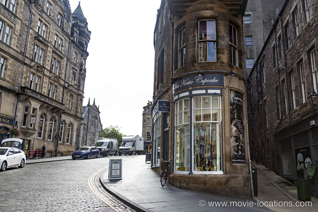
Like many of its predecessors, Marvel’s mega-populated blockbuster was based at Pinewood Atlanta Studios in Atlanta, Georgia, where – given the story’s interplanetary setting – most of it was filmed on studio sets.
There’s a visit to Earth to catch up with Wanda Maximoff (Elizabeth Olsen) and Vision (Paul Bettany), who’ve retired to a quiet unavenging life in Edinburgh, Scotland.
Well, not that quiet. They seem to be living in the famously touristy heart of the city where you’re never more than 50 yards from a set of bagpipes, though the streets seem oddly deserted. And oddly quiet.
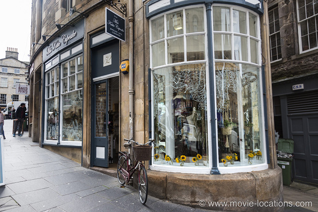
▶ Their attention is caught by a news report of the Black order attack on Greenwich Village on TV in the local takeaway.
The ‘Husnu Kebab House’ is no such thing. In reality, this corner store is Miss Katie Cupcake, 52 Cockburn Street (pronounced ‘Coburn’ if you don’t want to embarrass yourself), just north of the Royal Mile which runs through the historic Old Town from Edinburgh Castle to Holyrood Palace.
It’s an upscale gift store offering everything from handmade jewellery to vintage trinkets. A rare place to get a souvenir of your visit that involves neither bagpipes nor tartan.
A sly joke is the sign hanging in the mock eatery, which reads ‘We will deep-fry your kebab’. Well done the impish set-dresser who came up with that. ⏏
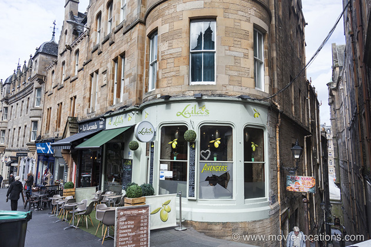
▶ It’s here on Cockburn Street that Wanda and Vision are attacked by Corvus Glaive and Proxima Midnight of the Black Order, anxious to get possession of the Mind Stone, inconveniently embedded in Vision's forehead.
The ensuing superpowered ruckus sees Wanda thrown through the window of Laila’s Mediterranean Bistro opposite the 'kebab house' – which now proudly announces its screen-star status with a faux-smashed window pane. ⏏
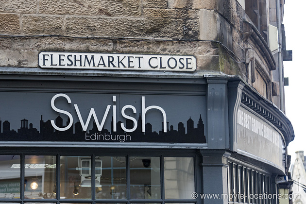
By the way, the street name you may have glimpsed, Fleshmarket Close, isn’t a bit of grisly set-dressing – that really is the name of the alleyway alongside Katie Cupcake’s.
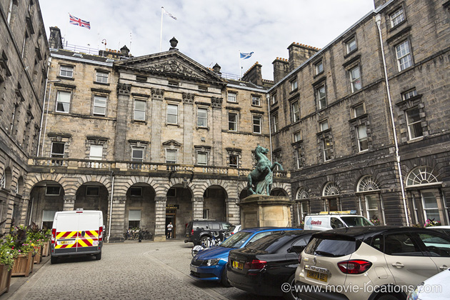
▶ When Vision is wounded, Wanda whisks him away over the rooftops and into the pillared courtyard of the City Chambers on the Royal Mile itself, with its classical statue of Alexander the Great with his horse Bucephalus, where the desperate fight continues. ⏏
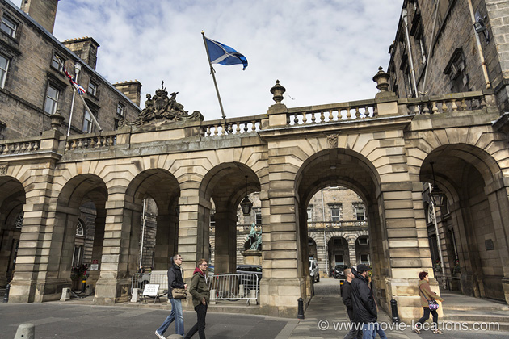
The battle continues with fireballs lighting up the classical architecture of the Royal Mile.
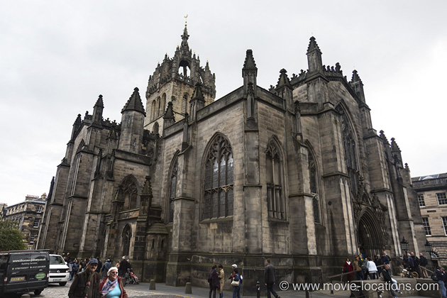
▶ Defying gravity, Vision and Glaive end up struggling on the roof of the 14th century St Giles’ Cathedral, across the street from the Chambers. ⏏
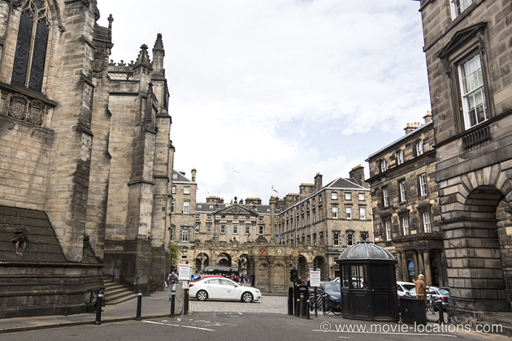
▶ Below the Cathedral, Midnight and Maximoff are facing off against each other on Parliament Square. ⏏
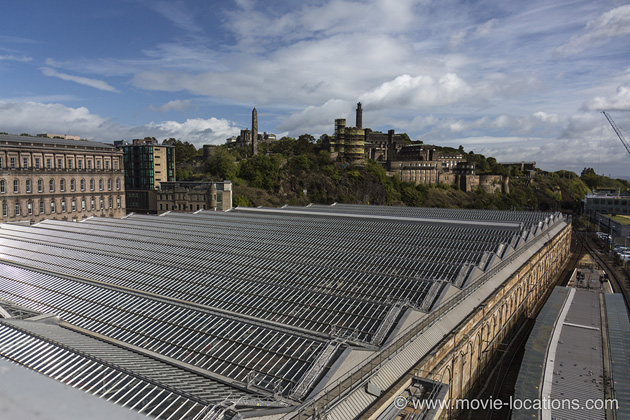
▶ Vision is seriously injured but when Wanda tries to carry him away to safety, she crashes through the expansive glass roof of Edinburgh Waverley Station, the city’s main rail terminus.
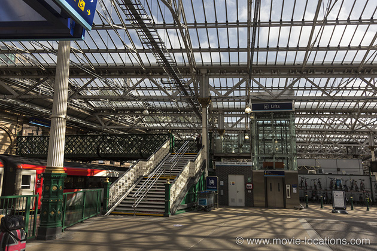
Only the sudden and unexpected arrival of Captain America (Chris Evans) and Black Widow (Scarlett Johansson), followed by Falcon (Anthony Mackie) swooping into the station concourse, turns the tide.
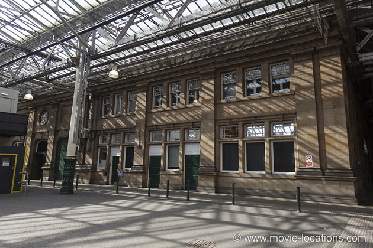
The battle takes advantage of the wide open space alongside Platform 2. Don't be fooled – that ‘Saluto’s’ coffee bar is nothing more than a temporary set built for the film.
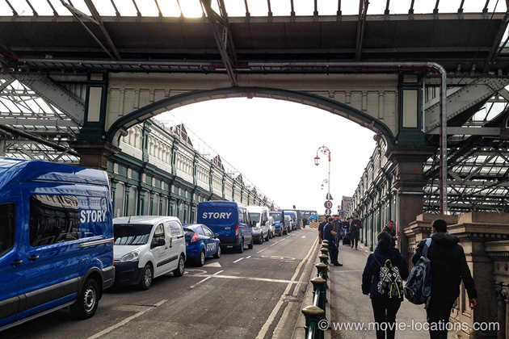
After the Black Order's tactical retreat, the rogue Avengers team makes a theatrical exit in their stolen Quinjet from the station’s Waverley Bridge road entrance. ⏏
The film's other locations are largely 'background plates' captured by a Second Unit, a small camera crew unencumbered by those expensive Hollywood stars.
▶ These suitably spectacular shots can then be incorporated digitally, as when the lagoons and white sand dunes of the Lençois Maranhenses National Park on the northeastern coast of Brazil become the basis for landscape of the planet Vormir, where Thanos (Josh Brolin) searches for the Soul Stone. These freshwater pools are temporarily formed during the rainy season as water gathers in the depressions. ⏏
▶ It hardly seems worth issuing a spoiler alert that the ending is famously downbeat, so let's just say that Thanos, alone but not happy, looks out over what are the Banaue Rice Terraces of Ifugao, in the heart of Luzon, the largest island of Philippines.
There’s precious little recorded history but it’s probable that these terraces were painstakingly carved out of the mountainsides by indigenous people, with minimal technology, around 2,000 years ago.
The forests and beaches of Luzon had previously stood in for 'Vietnam' in Francis Ford Coppola's epic Apocalypse Now. ⏏
Visit Info
Visit The Film Locations
UK | Scotland
Visit: Scotland
Visit: Edinburgh
Rail: Edinburgh Waverley Station
Visit: St Giles’ Cathedral,
Visit: Miss Katie Cupcake, 52 Cockburn Street
Visit: Laila’s Mediterranean Bistro
Brazil
Visit: Brazil
Visit: Lençois Maranhenses National Park
Philippines
Visit: the Philippines
Flights: Manila Ninoy Aquino International Airport, Andrews Avenue, Pasay, 1300 Metro Manila, Philippines (tel: 63.2.877.7888)
Visit: Banaue Rice Terraces